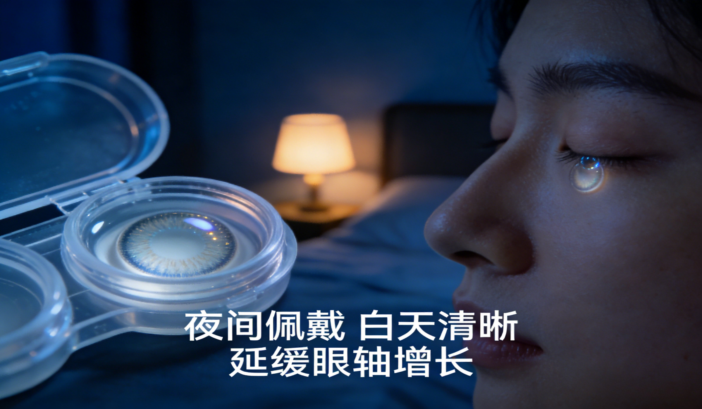

角膜塑形镜（OK 镜）
逆几何设计的硬性透气性角膜接触镜，夜间配戴使角膜中央弧度暂时变平，白天可暂时脱镜；可有效延缓青少年眼轴增长，属可逆的非手术物理矫正。
适用：8 岁及以上儿童青少年；屈光度在镜片注册证适用范围内；角膜曲率一般建议 39.00~48.00 D；角膜形态规则；卫生条件与依从性良好，未成年须监护人配合并规律随诊。
不宜／禁忌（摘选）：年龄小于 8 岁；角膜上皮病变、活动性角膜炎、圆锥角膜；角膜内皮细胞密度<2000 个/mm²；泪囊炎、中重度干眼、严重过敏性结膜炎、青光眼等；接触镜或护理液过敏史；妊娠哺乳期；免疫功能异常等。
安全要点：严格按规范护理、定期复查，出现眼红、眼痛、畏光、分泌物增多等不适应立即停戴并就诊。是否适合验配、镜片参数与更换周期，具体请遵医嘱。